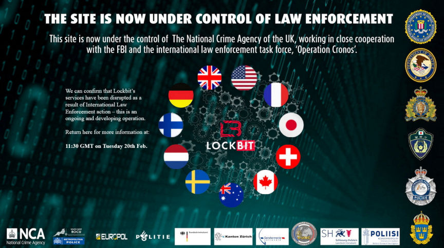
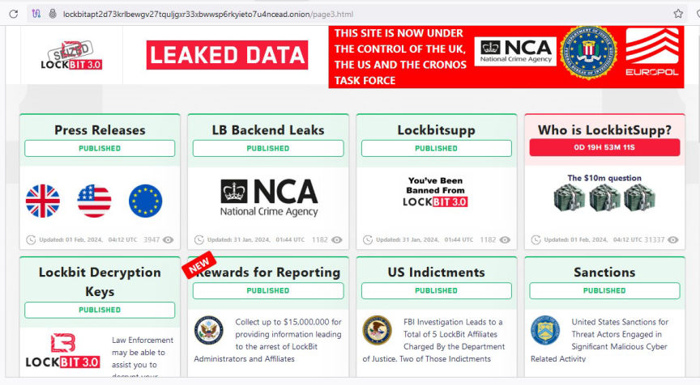
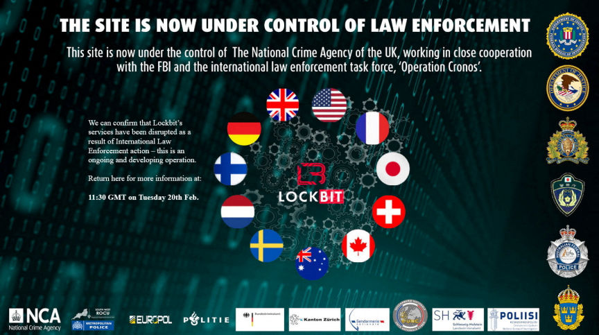
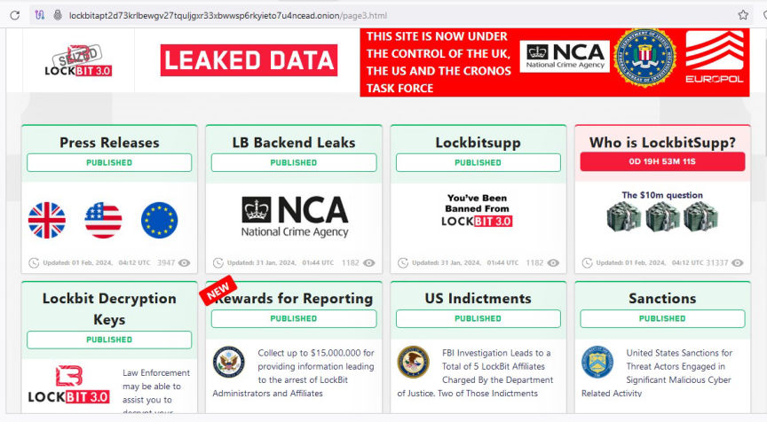

Operation Cronos: LockBit Ransomware Operations Disrupted
International law enforcement agencies took down LockBit's operation in an operation led by the UK's National Crime Agency.

Law enforcement agencies from 10 countries took control of LockBit's servers and dark web leak site and charged several suspects following months of investigations that were part of an international operation dubbed Operation Cronos.
In its four years of operation, the LockBit ransomware group provided ransomware-as-a-service to cybercriminals worldwide. LockBit users targeted 2,000 victims, asked for hundreds of millions of dollars in ransoms, and received more than $120 million in ransom payments.
Operation Cronos resulted in the seizure of LockBit's 34 servers in the Netherlands, Germany, Finland, France, Switzerland, Australia, the United States and the United Kingdom.
The NCA took control of LockBit’s administration infrastructure, including the group’s dark web leak site. The agency said it would be exposing LockBit’s operations through the site.

The operation also resulted in the seizure of "StealBit" servers. StealBit was a platform used by LockBit "affiliates" to organize and transfer victim data.
Tracking the proceeds of lockBit ransomware attacks resulted in the arrest of a 38-year-old man in Poland and a father and son duo in Ukraine. The investigators also seized 200 crypto wallets linked to the group.
French authorities charged two Russian nationals and one Polish national. In the US, two Russian nationals, Artur Sungatov and Ivan Kondratyev, were indicted for using LockBit to carry out ransomware attacks. The US has so far charged five suspects for using LockBit. The other three are Mikhail Vasiliev in November 2022, Ruslan Magomedovich Astamirov in June 2023, and Mikhail Pavlovich Matveev in May 2023.
The US Department of State announced a reward of up to $15 million for information that will lead to the identification of LockBit's key leaders or the arrest of LockBit ransomware affiliates.
The investigating agencies recovered decryption keys that can be used to recover data encrypted by the lockBit ransomware. The authorities released a decryption tool for LockBit 3.0.

The seizure banner
Law enforcement agencies from 10 countries took control of LockBit's servers and dark web leak site and charged several suspects following months of investigations that were part of an international operation dubbed Operation Cronos.
In its four years of operation, the LockBit ransomware group provided ransomware-as-a-service to cybercriminals worldwide. LockBit users targeted 2,000 victims, asked for hundreds of millions of dollars in ransoms, and received more than $120 million in ransom payments.
Operation Cronos resulted in the seizure of LockBit's 34 servers in the Netherlands, Germany, Finland, France, Switzerland, Australia, the United States and the United Kingdom.
The NCA took control of LockBit’s administration infrastructure, including the group’s dark web leak site. The agency said it would be exposing LockBit’s operations through the site.

The NCA is publishing on LockBit's leak site
The operation also resulted in the seizure of "StealBit" servers. StealBit was a platform used by LockBit "affiliates" to organize and transfer victim data.
Tracking the proceeds of lockBit ransomware attacks resulted in the arrest of a 38-year-old man in Poland and a father and son duo in Ukraine. The investigators also seized 200 crypto wallets linked to the group.
French authorities charged two Russian nationals and one Polish national. In the US, two Russian nationals, Artur Sungatov and Ivan Kondratyev, were indicted for using LockBit to carry out ransomware attacks. The US has so far charged five suspects for using LockBit. The other three are Mikhail Vasiliev in November 2022, Ruslan Magomedovich Astamirov in June 2023, and Mikhail Pavlovich Matveev in May 2023.
The US Department of State announced a reward of up to $15 million for information that will lead to the identification of LockBit's key leaders or the arrest of LockBit ransomware affiliates.
The investigating agencies recovered decryption keys that can be used to recover data encrypted by the lockBit ransomware. The authorities released a decryption tool for LockBit 3.0.
Quote:National Crime Agency Director General, Graeme Biggar
Through our close collaboration, we have hacked the hackers; taken control of their infrastructure, seized their source code, and obtained keys that will help victims decrypt their systems.
As of today, LockBit are locked out. We have damaged the capability and most notably, the credibility of a group that depended on secrecy and anonymity.
Our work does not stop here. LockBit may seek to rebuild their criminal enterprise. However, we know who they are, and how they operate. We are tenacious and we will not stop in our efforts to target this group and anyone associated with them.